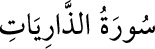

<a name=8787></a><br/>
<b>51- ZÂRİYÂT SÛRESİ</b><br/>
<i><b>Mekke’de inmiştir. 60 âyettir. </b></i><br/>
<i><b>İlk âyette geçen ve “rüzgarlar” anlamına gelen </b></i><br/>
<i><b>“zâriyât” kelimesi, surenin adı olmuştur.</b></i><br/>
